Photo credits
The homepage and menu dish photos are for illustration. They come from Wikimedia Commons and are used under the licenses below. They were cropped, extended at the edges where needed, and resized so each whole dish fits the round menu frame; these edited versions are shared under the same licenses. Back to the menu
| Dish | Original photo | Author | License | |
|---|---|---|---|---|
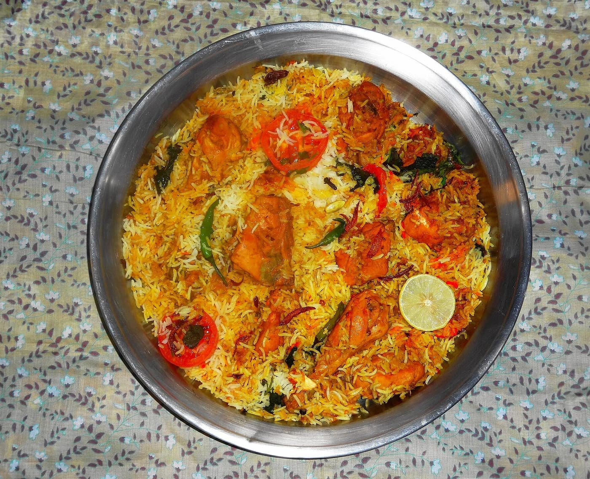 | Homepage photo (biryani) | Hyderabadi Dum Ki Biryani.JPG | Miansari66 | CC0 |
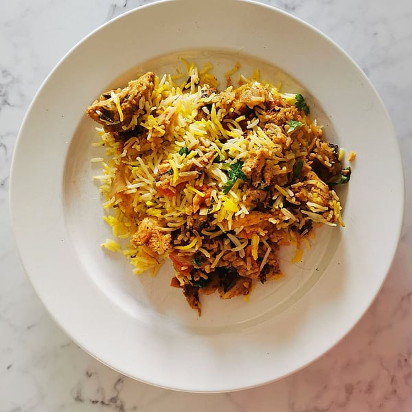 | Chicken Biryani | Biryani-Kerala style, homecooked.jpg | Netha Hussain | CC BY-SA 4.0 |
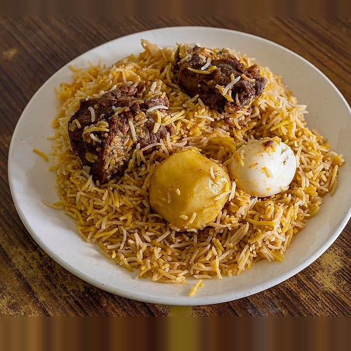 | Mutton Biryani | Kolkata mutton biryani.jpg | DeepanjanGhosh | CC BY-SA 4.0 |
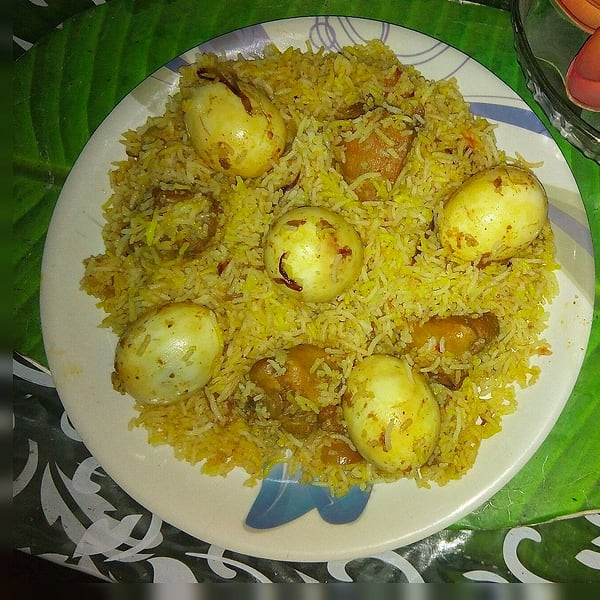 | Egg Biryani | Egg Biryani and Chicken Chap.jpg | Meghattay Saha | CC BY-SA 4.0 |
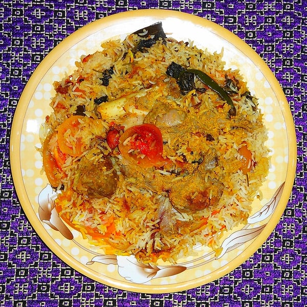 | Special Biryani | Hyderabadi Kachay Gosht Ki Biryani.JPG | Miansari66 | CC0 |
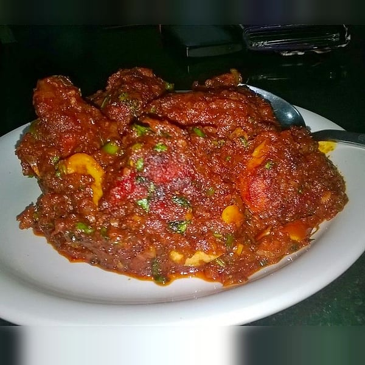 | Chicken Roast | Chicken ghee roast.jpg | Hasna e | CC BY-SA 4.0 |
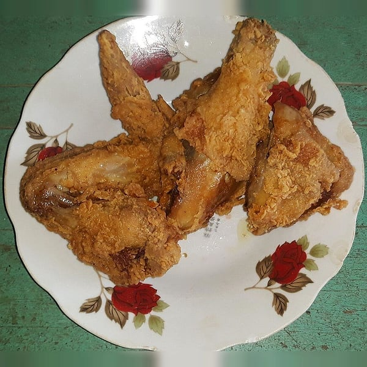 | Chicken Fry | Fried drumstick and wing chicken 1.jpg | Unknown (see source) | CC0 |
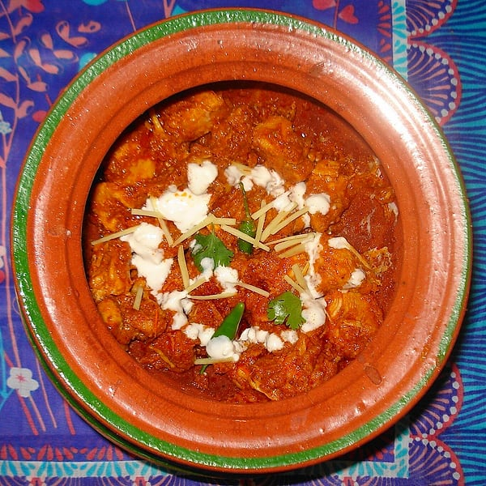 | Chicken Handi | Punjabi Chicken Handi.JPG | Miansari66 | CC0 |
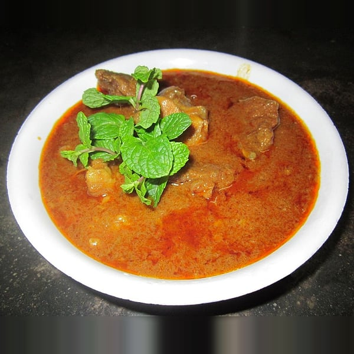 | Mutton Handi | Odia Mutton Curry (Mansha Tarkari).jpg | Satwik Cuttack | CC BY-SA 4.0 |
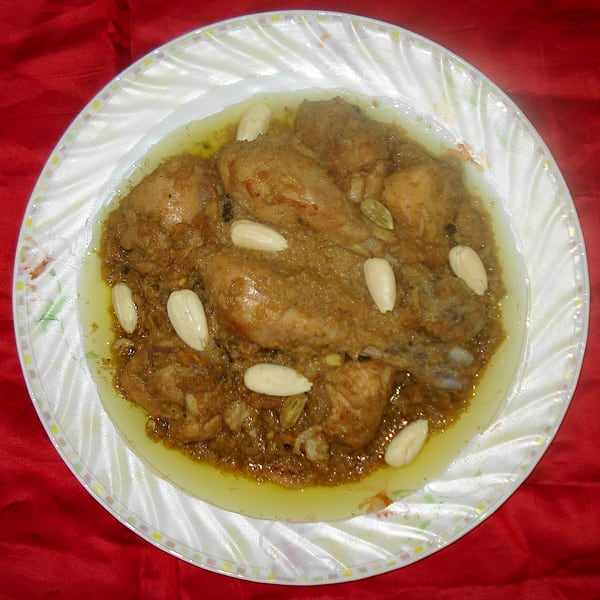 | Mutton Korma | Chicken White Qorma (Korma).JPG | Miansari66 | CC0 |
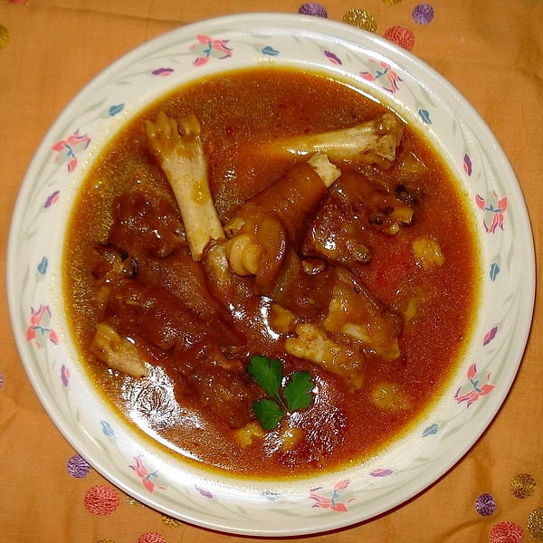 | Mutton Paya Korma | Paya Curry.JPG | Miansari66 | Public domain |
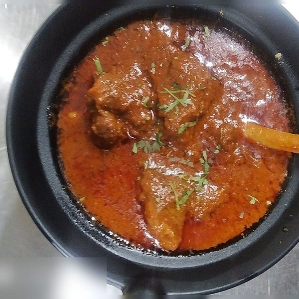 | Special Chicken & Mutton Korma | Mutton rogan Josh (kashmiri cuisine).jpg | Rajatsingh8808 | CC BY-SA 4.0 |
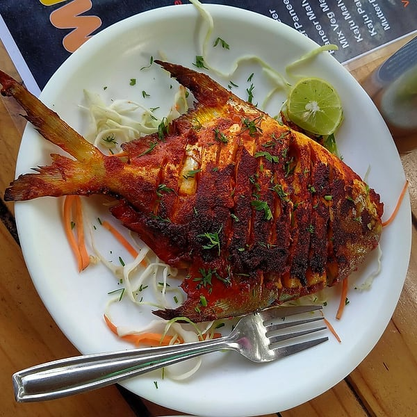 | Fish Roast | Malwani fish fry.jpg | Maildeshraj | CC BY-SA 4.0 |
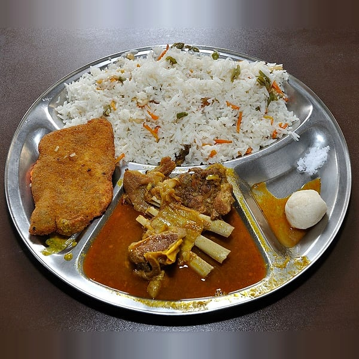 | Special Thali | Non-veg Thali 6009.JPG | Biswarup Ganguly | CC BY-SA 3.0 |
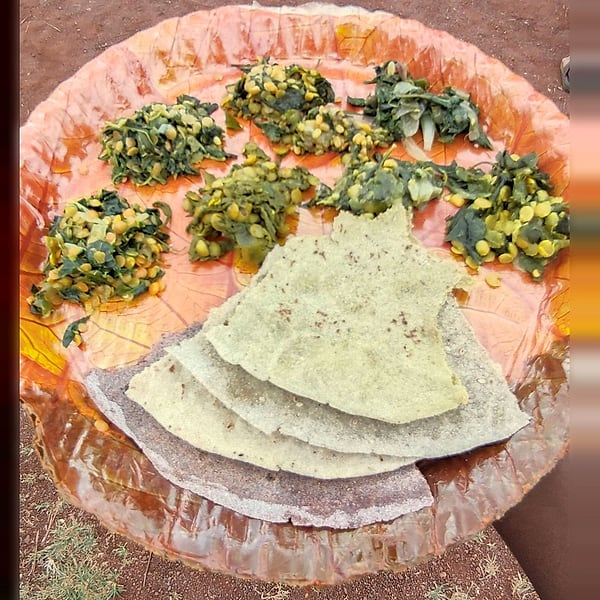 | Jowar Roti | Uncultivated Greens with Jowar Roti - Zaheerabad.jpg | అనిల్ ఉప్పలపాటి | CC BY-SA 4.0 |
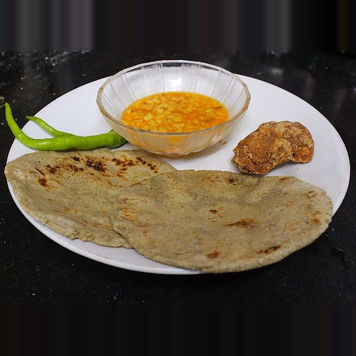 | Bajra Roti | Bajra Roti and Dal.JPG | Jay87.mehta | CC BY-SA 4.0 |
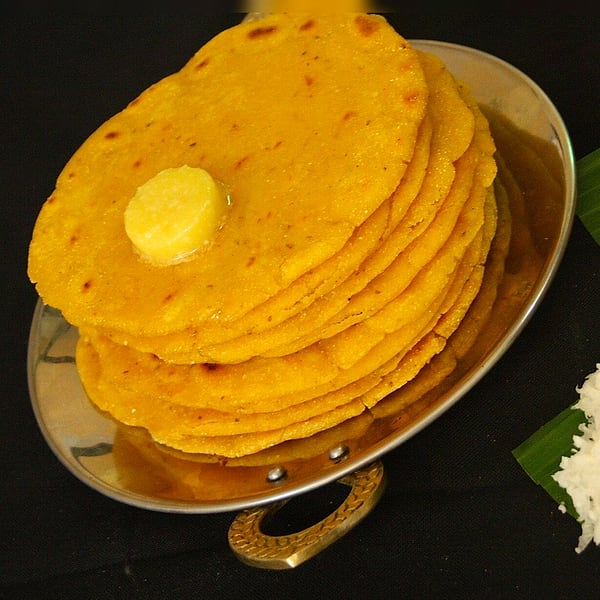 | Makka Roti | Makki Di Roti.JPG | Vsigamany | CC BY-SA 4.0 |


.jpg){kind=link}
.JPG){kind=link}

.jpg){kind=link}